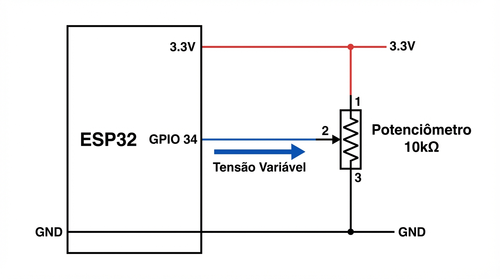

13
Potenciômetro: Circuito e Prática
Diagrama de montagem e detalhes técnicos para leitura analógica no ESP32.
Diagrama Esquemático

Conexões Físicas
Terminal 1: 3.3V (VCC)
Terminal 3: GND (Terra)
Central (Wiper): GPIO 34
*Inverter terminais 1 e 3 apenas inverte a direção de leitura.
Componentes
Valor ideal: 10kΩ ou 5kΩ.
Tipo: Linear (Tipo B) para controle direto.
Dica Pro
Use GPIOs 34-39 (Input Only) para não interferir em pinos de saída.
Nota: O ADC do ESP32 não é perfeitamente linear nos extremos (0V e 3.3V). Leituras próximas a 0 e 4095 podem ter "zonas mortas".